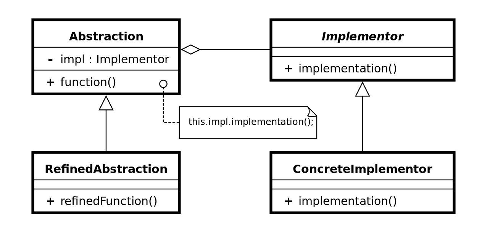

“单一职责类”设计模式（C++）
在软件组件的设计中，如果责任划分的不清晰，使用继承得到的结果往往是：随着需求的变化，子类急剧膨胀，同时充斥着重复代码的。而这时候的关键则是划清责任。
装饰模式（Decorator）
在某些情况下我们可能会“过度地使用继承扩展对象的功能”，由于继承为对象引入的静态特质，使得这种方式缺乏灵活性；并且随着子类的增多（扩展功能的增多），各种子类的组合（扩展功能的组合）会导致更多子类的膨胀。如何使“对象功能的扩展”能够根据需求来动态地实现？同时避免“扩展功能的增多”带来的子类膨胀问题？从而使得任何“功能扩展变化”所导致的影响降为最低？

模式定义：动态（组合）地给一些对象增加一些额外的职责。就增加功能而言，装饰模式比生成子类（继承）更为灵活（消除重复代码+减少子类数量）。
struct Component {
virtual void foo() = 0;
virtual ~Component() {}
};
// single responsibility;
struct ComponentA : public Component {
void foo() {
std::cout << "[Component A]" << std::endl;
}
};
// decorator (用于基于原子功能进行扩展);
struct DecoratorComponent : public Component { // 特征：对同一个类，即继承，又包含；
DecoratorComponent(Component* component) : component(component) {}
protected:
Component* component;
};
struct DecoratorComponentA : public DecoratorComponent {
DecoratorComponentA(Component* component) : DecoratorComponent(component) {}
void foo() {
component->foo();
std::cout << "[DecoratorComponent A]" << std::endl;
}
};
int main(int argc, char** argv) {
auto componentA = new ComponentA();
auto decoratorComponentA = new DecoratorComponentA(componentA);
decoratorComponentA->foo();
return 0;
}总结：
- 通过采用组合而非继承的手法，装饰模式实现了在运行时动态扩展对象功能的能力，而且可以根据需要扩展多个功能。避免了使用继承带来的“灵活性差”和“多子类衍生问题”；
- Decorator 类在接口上表现为 is-a 的继承关系，即 Decorator 类继承了 Component 类所具有的接口。但在实现上又表现为 has-a 的组合关系，即 Decorator 类又使用了另外一个 Component 类；
- 装饰模式的目的并非解决“多子类衍生的多继承”问题，其要点在于解决“主体类在多个方向上的扩展功能” —— 是为“装饰”的含义；
桥模式（Bridge）
由于某些类型的固有实现逻辑，使得他们具有两个变化的纬度，乃至多个纬度的变化。如何应对这种“多维度的变化”？如何利用 OOP 技术来使得类型可以轻松地沿着两个乃至多个方向变化，而不引入额外的复杂度？

其中 Abstraction 与 Implementor 是稳定的。
模式定义：将抽象部分（业务功能）与实现部分（平台实现）分离。使它们都可以独立地变化。
struct Implementator { // 对物体抽象的操作（实现），通常由物体调用；
~Implementator() {}
virtual void implement() = 0;
};
struct ImplementatorA : public Implementator { // 操作层面的变化纬度；
void implement() {
std::cout << "[Implementator A]" << std::endl;
}
};
struct Abstraction { // 抽象的物体；
Abstraction(Implementator* impl) : impl(impl) {}
~Abstraction() {}
virtual void foo() = 0;
protected:
Implementator *impl;
};
struct AbstractionA : public Abstraction { // 物体层面的变化纬度；
using Abstraction::Abstraction;
void foo() {
std::cout << "[Abstraction A]" << std::endl;
impl->implement();
}
};
int main(int argc, char **argv) {
auto implementatorA = new ImplementatorA{};
auto abstractionA = new AbstractionA(implementatorA);
abstractionA->foo();
return 0;
}总结:
- 桥模式使用“对象间的组合关系（通过抽象指针）”解耦了抽象和实现之间固有的绑定关系，使得抽象和实现之间固有的绑定关系，使得抽象和实现可以沿着各自的纬度来变化。所谓抽象和实现沿着各自纬度的变化，即“子类化”它们；
- 桥模式有时候类似于多继承方案，但是多继承方案往往违背单一职责原则（即一个类只有一个变化的原因），复用性比较差。桥模式是比多继承方案更好的解决方法；
- 桥模式的应用一般在“两个非常强的变化纬度”，有时一个类也有多于两个的变化纬度，这时可以使用桥模式的扩展模式（利用多个抽象指针）；
综合来看，装饰模式适用于为不同实现进行不同的扩展，重在基于实现的扩展；而桥模式适用于为某些固有实现，使得它们可以分别向两个或多个方向独立变化。